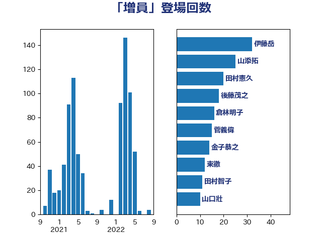

単語「増員」

| 伊藤岳 | 日本共産党 | 32 回 |
| 山添拓 | 日本共産党 | 25 回 |
| 田村憲久 | 自由民主党 | 20 回 |
| 後藤茂之 | 自由民主党 | 18 回 |
| 倉林明子 | 日本共産党 | 16 回 |
| 菅義偉 | 自由民主党 | 15 回 |
| 金子恭之 | 自由民主党 | 14 回 |
| 東徹 | 日本維新の会 | 12 回 |
| 田村智子 | 日本共産党 | 11 回 |
| 山口壯 | 自由民主党 | 10 回 |
| 岸真紀子 | 立憲民主党 | 10 回 |
| 武田良太 | 自由民主党 | 10 回 |
| 吉良よし子 | 日本共産党 | 9 回 |
| 野上浩太郎 | 自由民主党 | 9 回 |
| 岸田文雄 | 自由民主党 | 8 回 |
| 本村伸子 | 日本共産党 | 8 回 |
| 岩渕友 | 日本共産党 | 7 回 |
| 上川陽子 | 自由民主党 | 6 回 |
| 宮本岳志 | 日本共産党 | 6 回 |
| 打越さく良 | 立憲民主党 | 6 回 |
| 河野太郎 | 自由民主党 | 6 回 |
| 高良鉄美 | 無所属 | 6 回 |
| 坂本哲志 | 自由民主党 | 5 回 |
| 宮本徹 | 日本共産党 | 5 回 |
| 山田勝彦 | 立憲民主党 | 5 回 |
| 末松義規 | 立憲民主党 | 5 回 |
| 石川香織 | 立憲民主党 | 5 回 |
| 西岡秀子 | 国民民主党 | 5 回 |
| 赤羽一嘉 | 公明党 | 5 回 |
| 山本香苗 | 公明党 | 4 回 |
| 岡本あき子 | 立憲民主党 | 4 回 |
| 萩生田光一 | 自由民主党 | 4 回 |
| 西村康稔 | 自由民主党 | 4 回 |
| 道下大樹 | 立憲民主党 | 4 回 |
| 吉田宣弘 | 公明党 | 3 回 |
| 吉田統彦 | 立憲民主党 | 3 回 |
| 和田有一朗 | 日本維新の会 | 3 回 |
| 塩川鉄也 | 日本共産党 | 3 回 |
| 山際大志郎 | 自由民主党 | 3 回 |
| 枝野幸男 | 立憲民主党 | 3 回 |
| 武部新 | 自由民主党 | 3 回 |
| 津島淳 | 自由民主党 | 3 回 |
| 田畑裕明 | 自由民主党 | 3 回 |
| 笠井亮 | 日本共産党 | 3 回 |
| 舟山康江 | 国民民主党 | 3 回 |
| 船田元 | 自由民主党 | 3 回 |
| 谷合正明 | 公明党 | 3 回 |
| 豊田俊郎 | 自由民主党 | 3 回 |
| 金村龍那 | 日本維新の会 | 3 回 |
| 鈴木義弘 | 国民民主党 | 3 回 |
| 阿部知子 | 立憲民主党 | 3 回 |
| 階猛 | 立憲民主党 | 3 回 |
| 高橋千鶴子 | 日本共産党 | 3 回 |
| 中村裕之 | 自由民主党 | 2 回 |
| 五十嵐清 | 自由民主党 | 2 回 |
| 井林辰憲 | 自由民主党 | 2 回 |
| 古賀友一郎 | 自由民主党 | 2 回 |
| 吉川沙織 | 立憲民主党 | 2 回 |
| 堂故茂 | 自由民主党 | 2 回 |
| 大口善徳 | 公明党 | 2 回 |
| 大石あきこ | れいわ新選組 | 2 回 |
| 小宮山泰子 | 立憲民主党 | 2 回 |
| 山本博司 | 公明党 | 2 回 |
| 山東昭子 | 自由民主党 | 2 回 |
| 岸信夫 | 自由民主党 | 2 回 |
| 志位和夫 | 日本共産党 | 2 回 |
| 日下正喜 | 公明党 | 2 回 |
| 末松信介 | 自由民主党 | 2 回 |
| 森まさこ | 自由民主党 | 2 回 |
| 森山浩行 | 立憲民主党 | 2 回 |
| 清水真人 | 自由民主党 | 2 回 |
| 田中健 | 国民民主党 | 2 回 |
| 田所嘉徳 | 自由民主党 | 2 回 |
| 礒崎哲史 | 国民民主党 | 2 回 |
| 福島みずほ | 社会民主党 | 2 回 |
| 福重隆浩 | 公明党 | 2 回 |
| 稲富修二 | 立憲民主党 | 2 回 |
| 空本誠喜 | 日本維新の会 | 2 回 |
| 竹内真二 | 公明党 | 2 回 |
| 義家弘介 | 自由民主党 | 2 回 |
| 舩後靖彦 | れいわ新選組 | 2 回 |
| 芳賀道也 | 国民民主党 | 2 回 |
| 赤嶺政賢 | 日本共産党 | 2 回 |
| 里見隆治 | 公明党 | 2 回 |
| 青山大人 | 立憲民主党 | 2 回 |
| 高木毅 | 自由民主党 | 2 回 |
| 高階恵美子 | 自由民主党 | 2 回 |
| 麻生太郎 | 自由民主党 | 2 回 |
| ながえ孝子 | 無所属 | 1 回 |
| 三木圭恵 | 日本維新の会 | 1 回 |
| 中川郁子 | 自由民主党 | 1 回 |
| 中曽根康隆 | 自由民主党 | 1 回 |
| 井上哲士 | 日本共産党 | 1 回 |
| 佐藤啓 | 自由民主党 | 1 回 |
| 佐藤英道 | 公明党 | 1 回 |
| 加藤勝信 | 自由民主党 | 1 回 |
| 北神圭朗 | 無所属 | 1 回 |
| 古川禎久 | 自由民主党 | 1 回 |
| 吉田忠智 | 立憲民主党 | 1 回 |
| 国定勇人 | 自由民主党 | 1 回 |
| 城井崇 | 立憲民主党 | 1 回 |
| 堀井巌 | 自由民主党 | 1 回 |
| 堤かなめ | 立憲民主党 | 1 回 |
| 大野泰正 | 自由民主党 | 1 回 |
| 守島正 | 日本維新の会 | 1 回 |
| 安江伸夫 | 公明党 | 1 回 |
| 小林鷹之 | 自由民主党 | 1 回 |
| 小泉進次郎 | 自由民主党 | 1 回 |
| 尾崎正直 | 自由民主党 | 1 回 |
| 山岸一生 | 立憲民主党 | 1 回 |
| 岬麻紀 | 日本維新の会 | 1 回 |
| 島村大 | 自由民主党 | 1 回 |
| 工藤彰三 | 自由民主党 | 1 回 |
| 後藤祐一 | 立憲民主党 | 1 回 |
| 掘井健智 | 日本維新の会 | 1 回 |
| 新垣邦男 | 立憲民主党 | 1 回 |
| 本田顕子 | 自由民主党 | 1 回 |
| 杉久武 | 公明党 | 1 回 |
| 杉本和巳 | 日本維新の会 | 1 回 |
| 杉田水脈 | 自由民主党 | 1 回 |
| 松野博一 | 自由民主党 | 1 回 |
| 林芳正 | 自由民主党 | 1 回 |
| 柳本顕 | 自由民主党 | 1 回 |
| 柴田巧 | 日本維新の会 | 1 回 |
| 横沢高徳 | 立憲民主党 | 1 回 |
| 櫻井周 | 立憲民主党 | 1 回 |
| 比嘉奈津美 | 自由民主党 | 1 回 |
| 水岡俊一 | 立憲民主党 | 1 回 |
| 河西宏一 | 公明党 | 1 回 |
| 浦野靖人 | 日本維新の会 | 1 回 |
| 渡辺周 | 立憲民主党 | 1 回 |
| 熊谷裕人 | 立憲民主党 | 1 回 |
| 熊野正士 | 公明党 | 1 回 |
| 片山大介 | 日本維新の会 | 1 回 |
| 田村貴昭 | 日本共産党 | 1 回 |
| 石井準一 | 自由民主党 | 1 回 |
| 石田昌宏 | 自由民主党 | 1 回 |
| 神谷裕 | 立憲民主党 | 1 回 |
| 秋野公造 | 公明党 | 1 回 |
| 簗和生 | 自由民主党 | 1 回 |
| 米山隆一 | 立憲民主党 | 1 回 |
| 美延映夫 | 日本維新の会 | 1 回 |
| 西野太亮 | 自由民主党 | 1 回 |
| 西銘恒三郎 | 自由民主党 | 1 回 |
| 足立康史 | 日本維新の会 | 1 回 |
| 進藤金日子 | 自由民主党 | 1 回 |
| 野田国義 | 立憲民主党 | 1 回 |
| 野田聖子 | 自由民主党 | 1 回 |
| 鈴木俊一 | 自由民主党 | 1 回 |
| 鈴木庸介 | 立憲民主党 | 1 回 |
| 鎌田さゆり | 立憲民主党 | 1 回 |
| 長谷川淳二 | 自由民主党 | 1 回 |
| 須藤元気 | 無所属 | 1 回 |